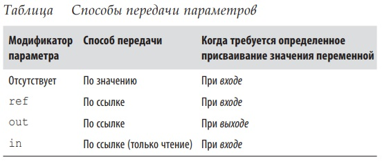

<!DOCTYPE html PUBLIC "-//W3C//DTD XHTML 1.0 Transitional//EN" "http://www.w3.org/TR/xhtml1/DTD/xhtml1-transitional.dtd">

<html xmlns="http://www.w3.org/1999/xhtml">

<!-- Mirrored from http://srvdata2.asuedu.kmk/Book_OP_04_OA_25/Les6/9.htm by HTTrack Website Copier/3.x [XR&CO], Sat, 03 Oct 2026 09:20:59 GMT -->
<head>
    <title>Untitled Page</title>
    <link rel="stylesheet" type="text/css" href="../../CSS/Oa-2.css" />
    <style type="text/css">
        .style1
        {
            width: 100%;
        }
    .style2 {
	color: #FF0000;
}
.style4 {
	margin-left: 40px;
}
    .style3 {
	color: #0000FF;
}
    .style5 {
	color: #0000FF;
	margin-left: 40px;
}
.style6 {
	color: #FF0000;
	font-size: medium;
}
.style7 {
	text-align: center;
}
    </style>
</head>
<body>

    <table class="style1">
        <tr>
            <td colspan="3" class="zag" 
                style="border-bottom-color: #800000; border-bottom-width: thin; border-bottom-style: double">
                Тема 9. Переменные и параметры в C#. </td>
        </tr>
        <tr>
            <td width="60%">
                &nbsp;</td>
            <td width="20%">
                &nbsp;</td>
            <td width="20%" id="Naz" align="center" class="og" onmouseover="return Naz_onmouseover()" onmouseout="return Naz_onmouseout()" onclick="return Naz_onclick()">
                Назад</td>
        </tr>
        <tr>
            <td colspan="3" class="text">
                <p>Переменная представляет ячейку в памяти, которая содержит 
изменяемое значение. Переменная может быть локальной переменной, параметром (передаваемым по значению, ссылке, входным и 
выходным), полем (экземпляра или статическим) или элементом 
массива.</p>
<p class="style2"><strong>Стек и куча</strong></p>
<p>Стек и куча — это места, где располагаются переменные. Стек 
и куча имеют существенно различающуюся семантику времени жизни.</p>
<p class="style2"><strong>Стек</strong></p>
<p>Стек представляет собой блок памяти для хранения локальных 
переменных и параметров. Стек логически увеличивается при входе в метод или функцию, а после выхода уменьшается. Взгляните на следующий метод (чтобы не отвлекать внимания, проверка 
входного аргумента не делается):</p>
<pre class="style4"><span class="style3">static int Factorial (int x)
</span>{<span class="style3">
 if (x == 0) return 1;
 return x * Factorial(x-1);
</span>}</pre>
<p>Этот метод является рекурсивным , т.е. он вызывает сам себя. 
Каждый раз, когда происходит вход в метод, в стеке размещается 
новый экземпляр int, а каждый раз, когда метод завершается, память, выделенная этому экземпляру int, освобождается.</p>
<p class="style3"><strong>Куча</strong></p>
<p>Куча — это память, в которой располагаются объекты (т.е. экземпляры ссылочного типа). Всякий раз, когда создается новый 
объект, он размещается в куче и на него возвращается ссылка. Во 
время выполнения программы по мере создания новых объектов куча начинает заполняться. В исполняющей среде предусмотрен 
сборщик мусора , который периодически освобождает объекты 
из кучи, чтобы программа не столкнулась с нехваткой памяти. </p>
<p>Объект становится пригодным для освобождения, если отсутствуют ссылки на него.</p>
<p>Экземпляры типов-значений (и ссылки на объекты) хранятся там, где были 
объявлены соответствующие переменные. Если экземпляр был объявлен как поле 
внутри типа класса или как элемент массива, то такой экземпляр располагается в куче.</p>
<p>ПРИМЕЧАНИЕ</p>
<p>В языке C# нельзя явно удалять объекты, как это делается в C++. Объект без ссылок со временем уничтожается 
сборщиком мусора.</p>
<p>В куче также хранятся статические поля и константы. В отличие от объектов, память для которых выделена в куче (и которые 
могут быть обработаны сборщиком мусора), они существуют 
до тех пор, пока домен приложения не прекратит свое существование.</p>
<p class="style3"><strong>Определенное присваивание</strong></p>
<p>В C# принудительно применяется политика определенного 
присваивания. На практике это означает, что за пределами контекста unsafe 
получить доступ к неинициализированной памяти невозможно. Определенное 
присваивание приводит к трем следствиям.</p>
				<ul>
					<li>Локальным переменным перед тем, как их можно будет читать, должны быть присвоены значения.</li>
					<li>При вызове метода должны быть предоставлены аргументы функции (если только они не помечены как необязательные; см. раздел “Необязательные параметры”).</li>
				</ul>
<p>Все остальные переменные (такие, как поля и элементы 
массивов) автоматически инициализируются исполняющей средой</p>
<p>Например, следующий код вызывает ошибку времени компиляции:/<pre class="style5"><strong>int x; // x – ɥɨɤɚɥɶɧɚɹ ɩɟɪɟɦɟɧɧɚɹ
Console.WriteLine(x); // Ɉɲɢɛɤɚ ɜɪɟɦɟɧɢ ɤɨɦɩɢɥɹɰɢɢ
Однако следующий код выводит 0, потому что поля неявно 
получают значения по умолчанию (будь то поле экземпляра или 
статическое):
Console.WriteLine(Test.X); // 0
class Test { public static int X; } // ɉɨɥɟ</strong></pre>
<p class="style3"><strong>Значения по умолчанию</strong></p>
<p>Экземпляры всех типов имеют значения по умолчанию. Значения по умолчанию для предопределенных типов являются результатом побитового обнуления памяти и представляют собой null
для ссылочных типов, 0 — для числовых и перечислимых типов, '\0' — для типа char и false — для типа bool.</p>
<p>Получить значение по умолчанию для любого типа можно с использованием ключевого слова default (как вы увидите позже, на практике поступать так удобно при работе с обобщениями).</p> 
<p>Значение по умолчанию в пользовательском типе-значении (т.е. struct) — это то же самое, что и значения по умолчанию для всех 
полей, определенных данным пользовательским типом.</p>
<pre class="style5"><strong>Console.WriteLine(default(decimal)); // 0
decimal d = default;</strong></pre>
<p>Параметры</p>
<p>Метод может принимать последовательность параметров. Параметры определяют набор аргументов, которые должны быть 
предоставлены этому методу. В следующем примере метод Foo()
имеет единственный параметр с именем p типа int:</p>
<pre class="style5"><strong>Foo (8); // 8 — ɚɪɝɭɦɟɧɬ
static void Foo (int p) {...} // p — ɩɚɪɚɦɟɬɪ</strong></pre>
<p>Управлять способом передачи параметров можно с помощью модификаторов 
<span class="style6"><strong>ref, out и in</strong></span> (табл. 5).</p>
<p class="style7">
&nbsp;</p>
				<p class="style3"><strong>Передача аргументов по значению</strong></p>
<p>По умолчанию аргументы в C# передаются по значению, что, 
несомненно, является самым распространенным случаем. Это означает, что при передаче методу создается копия значения:</p>
				<p class="style4">
<pre><span class="style3"><strong>int x = 8;
Foo(x); // ɋɨɡɞɚɧɢɟ ɤɨɩɢɢ x
Console.WriteLine(x); // x ɨɫɬɚɟɬɫɹ ɪɚɜɧɵɦ 8
static void Foo (int p)
{
 p = p + 1; // ɍɜɟɥɢɱɟɧɢɟ p ɧɚ 1
  Console.WriteLine(p); // ȼɵɜɨɞ p ɧɚ ɷɤɪɚɧ
}</strong></span>
</pre>
<p>Присваивание p нового значения не изменяет содержимое x, 
потому что p и x находятся в разных ячейках памяти.</p>
<p>Передача по значению аргумента ссылочного типа приводит к 
копированию ссылки, но не объекта. В следующем примере метод 
Foo() видит тот же объект StringBuilder, который был инстанцирован (sb), однако имеет независимую ссылку на него. Другими 
словами, sb и fooSB являются отдельными друг от друга переменными, которые ссылаются на один и тот же объект:</p>
<pre class="style4"><span class="style3"><strong>StringBuilder sb = new StringBuilder();
Foo(sb);
Console.WriteLine(sb.ToString()); // test
static void Foo(StringBuilder fooSB)
</strong></span>{<span class="style3"><strong>
</strong></span> <span class="style3"><strong>fooSB.Append("test");
</strong></span> <span class="style3"><strong>fooSB = null;
}</strong></span></pre>
<p class="style4">Поскольку fooSB — копия ссылки, установка ее равной null
не приводит к установке в null переменной sb. (Однако если параметр fooSB объявить и вызывать с модификатором ref, то sb
станет равной null.)</p><p class="style3">
<strong>Модификатор ref</strong></p><p>
Для передачи по ссылке в C# предусмотрен модификатор параметра ref . В приведенном ниже примере p и x ссылаются на одну 
и ту же ячейку памяти:</p><pre class="style4">
<span class="style3"><strong>int x = 8;
Foo(ref x); // Foo ɪɚɛɨɬɚɟɬ ɧɟɩɨɫɪɟɞɫɬɜɟɧɧɨ ɫ x
Console.WriteLine(x); // ɋɟɣɱɚɫ x ɪɚɜɧɨ 9
static void Foo(ref int p)
</strong></span>{<span class="style3"><strong>
 p = p + 1; // ɍɜɟɥɢɱɟɧɢɟ p ɧɚ 1
</strong></span> <span class="style3"><strong>Console.WriteLine(p); // ȼɵɜɨɞ p ɧɚ ɷɤɪɚɧ
</strong></span>}</pre><p>
Теперь присваивание p нового значения изменяет содержимое x. Обратите внимание, что модификатор ref должен быть 
указан как при определении, так и при вызове метода. Это делает 
происходящее совершенно ясным.</p><p>
ПРИМЕЧАНИЕ</p><p>
Параметр может быть передан по ссылке или по значению 
независимо от того, относится он к ссылочному типу или 
к типу-значению.</p><p class="style3">
<strong>Модификатор out</strong></p><p>
Аргумент out схож с аргументом ref, за исключением следующих аспектов:
</p>
				<ul>
					<li>он не нуждается в присваивании значения перед входом в 
функцию;</li>
					<li>ему обязательно должно быть присвоено значение перед 
выходом из функции.</li>
				</ul>
				<p>
Модификатор out чаще всего применяется для получения из 
метода нескольких возвращаемых значений.</p>
<p class="style3"><strong>Переменные out и их отбрасывание</strong></p><p>
Начиная с версии C# 7, при вызове методов с параметрами out
переменные можно объявлять “на лету”:</p><pre class="style5">
int.TryParse ("123", out int x);
Console.WriteLine(x);</pre><p>
Приведенный выше код эквивалентен следующему:</p><pre class="style5">
int x;
int.TryParse ("123", out x);
Console.WriteLine(x);</pre><p>
Когда вызываются методы с множеством параметров out, 
с помощью символа подчеркивания можно “отбрасывать” любые 
параметры, которые не интересуют вызывающий код. Предполагая, что метод SomeBigMethod() был определен с пятью параметрами out, вот как можно проигнорировать все параметры, 
кроме третьего:</p><pre class="style5">
SomeBigMethod(out _, out _, out int x, out _, out _);
Console.WriteLine(x);</pre><p class="style3">
<strong>Модификатор in</strong></p><p>
Начиная с версии C# 7.2, параметр можно предварять модификатором in , чтобы гарантировать его неизменность внутри метода. В результате у компилятора появляется возможность избежать 
накладных расходов по созданию копии аргумента для его передачи, которые могут оказаться существенными в случае крупных 
пользовательских типов значений (см. разде л “Структуры”).</p><p class="style3">
<strong>Модификатор params</strong></p><p>
Модификатор params , когда он применяется к последнему параметру метода, позволяет методу принимать любое количество 
аргументов определенного типа. Тип такого параметра должен 
быть объявлен как массив. Например:</p><pre class="style4">
<span class="style3">static int Sum(params int[] ints)
</span>{<span class="style3">
</span> <span class="style3">int sum = 0;
 for (int i = 0; i < ints.Length; i++) sum += ints[i];
 return sum;
</span>}</pre>
<p>Вызвать метод Sum() можно так:</p><pre class="style5">
<strong>Console.WriteLine(Sum(1, 2, 3, 4)); // 10</strong></pre><p>
Аргумент params может быть также предоставлен как обычный массив. Предыдущий вызов семантически эквивалентен следующему коду:</p>
				<pre class="style5">
Console.WriteLine(Sum(new int[] { 1, 2, 3, 4 }));</pre><p class="style3">
<strong>Необязательные параметры</strong></p><p>
В методах, конструкторах и индексаторах можно объявлять 
необязательные параметры. Параметр является необязательным, 
если в его объявлении указано значение по умолчанию:</p><pre class="style5">
<strong>void Foo(int x = 23) { Console.WriteLine(x); }</strong></pre><p>
При вызове метода необязательные параметры могут быть 
опущены:</p><pre class="style4">
<span class="style3">F<strong>oo(); // 23</strong></span></pre><p>
В действительности в качестве необязательного параметра x
передается аргумент со значением по умолчанию 23 — компилятор встраивает это значение в скомпилированный вызывающий 
код. Показанный выше вызов Foo() семантически эквивалентен 
вызову</p><pre class="style5">
Foo(23);</pre><p>
потому что компилятор просто подставляет значение по умолчанию необязательного параметра.</p><p>
ПРИМЕЧАНИЕ</p><p>
Добавление необязательного параметра к открытому методу, который вызывается из другой сборки, требует перекомпиляции обеих сборок — точно так же, как и в случае, если бы параметр был обязательным.</p><p>
Значение по умолчанию необязательного параметра должно 
быть указано в виде константного выражения или конструктора 
без параметров для типа-значения. Необязательные параметры не 
могут быть помечены модификатором ref или out</p><pre class="style5">
Console.WriteLine(Sum(1, 2, 3, 4)); // 10</pre><p>
Аргумент params может быть также предоставлен как обычный массив. Предыдущий вызов семантически эквивалентен следующему коду:</p>
				<pre class="style5">
Console.WriteLine(Sum(new int[] { 1, 2, 3, 4 }));</pre><p class="style3">
<strong>Необязательные параметры</strong></p><p>
В методах, конструкторах и индексаторах можно объявлять 
необязательные параметры. Параметр является необязательным, 
если в его объявлении указано значение по умолчанию:</p><pre class="style5">
void Foo(int x = 23) { Console.WriteLine(x); }</pre><p>
При вызове метода необязательные параметры могут быть 
опущены:</p><pre class="style5">
Foo(); // 23</pre><p>
В действительности в качестве необязательного параметра x
передается аргумент со значением по умолчанию 23 — компилятор встраивает это 
значение в скомпилированный вызывающий код. Показанный выше вызов Foo() 
семантически эквивалентен вызову</p><pre class="style5">
Foo(23);</pre><p>
потому что компилятор просто подставляет значение по умолчанию необязательного параметра.</p><p>
ПРИМЕЧАНИЕ</p><p>
Добавление необязательного параметра к открытому методу, который вызывается из другой сборки, требует перекомпиляции обеих сборок — точно так же, как и в случае, если бы параметр был обязательным.
</p><p>Значение по умолчанию необязательного параметра должно 
быть указано в виде константного выражения или конструктора 
без параметров для типа-значения. Необязательные параметры не 
могут быть помечены модификатором ref или out</p>
<p>Обязательные параметры должны находиться перед необязательными параметрами в объявлении метода и при его вызове 
(исключением являются аргументы params, которые всегда располагаются последними). В следующем примере для x передается 
явное значение 1, а для y — значение по умолчанию 0:</p><pre class="style4">
Foo(1); // 1, 0
void Foo(int x = 0, int y = 0)
{
 Console.WriteLine(x + ", " + y);
}</pre><p>
Чтобы сделать иначе (поменять местами значение по умолчанию для x и указанное явно значение для y), требуется скомбинировать необязательные параметры с именованными аргументами.
</p><p class="style3"><strong>Именованные аргументы</strong></p><p>
Вместо распознавания аргумента по позиции его можно идентифицировать по имени. Например:</p>
				<pre class="style4">
<span class="style3">Foo(x:1, y:2); // 1, 2
void Foo(int x, int y)
</span>{<span class="style3">
</span> <span class="style3">Console.WriteLine(x + ", " + y);
}</span></pre><p>
Именованные аргументы могут находиться в любом порядке. 
Следующие вызовы Foo() семантически идентичны:</p><pre class="style5">
Foo(x:1, y:2);
Foo(y:2, x:1);</pre><p>
Именованные и позиционные аргументы можно смешивать 
при условии, что именованные аргументы указаны последними:</p>
				<pre class="style5">
Foo (1, y:2);</pre><p>
Именованные аргументы особенно удобны в сочетании с необязательными параметрами. Например, взгляните на такой 
метод:</p><pre class="style5">
void Bar(int a=0, int b=0, int c=0, int d=0) { ... }</pre><p>
Его можно вызвать, предоставив только значение для d:</p><pre class="style5">
Bar(d:3);</pre><p>
Это особенно удобно при работе с API COM</p>
                <p>&nbsp;</p></td>
        </tr>
        <tr>
            <td>
                &nbsp;</td>
            <td>
                &nbsp;</td>
            <td>
                &nbsp;</td>
        </tr>
        <tr>
            <td colspan="3" 
                style="font-family: 'Comic Sans MS'; font-size: 8px; color: #000099">
                Конспект подготовлен Бакулиным А. М. 2022 год.</td>
        </tr>
    </table>
<script language="javascript" type="text/javascript">
// <!CDATA[

function Naz_onmouseover() {
Naz.style.fontSize=12;
Naz.style.cursor="hand"
}

function Naz_onmouseout() {
Naz.style.fontSize=10;
Naz.style.cursor="none"
}

function Naz_onclick() {
window.location="Index_Les6.htm"
}

// ]]>
</script>

</body>

<!-- Mirrored from http://srvdata2.asuedu.kmk/Book_OP_04_OA_25/Les6/9.htm by HTTrack Website Copier/3.x [XR&CO], Sat, 03 Oct 2026 09:20:59 GMT -->
</html>
